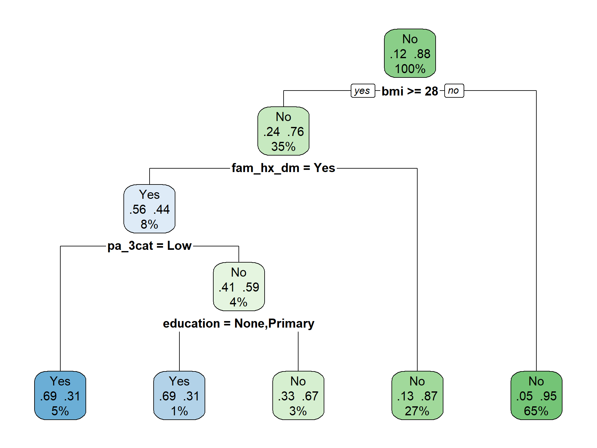
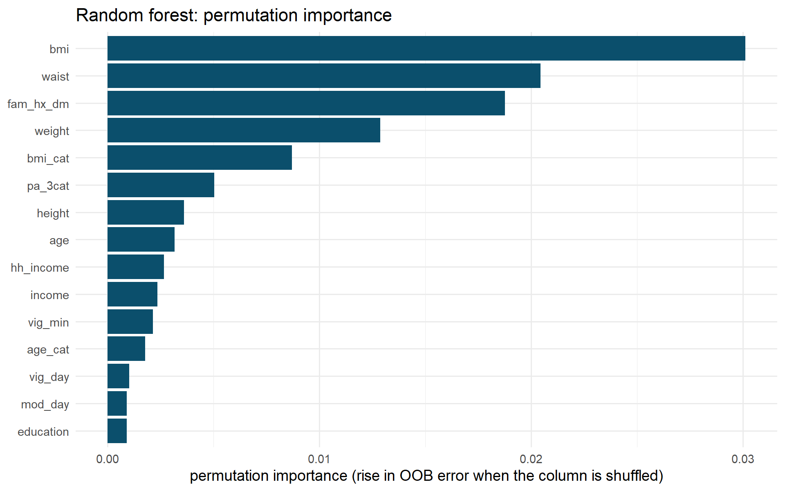
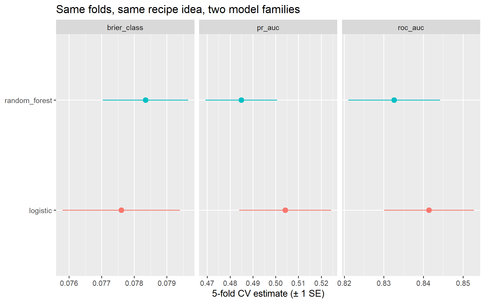

# WHERE WE ARE ---------------------------------------------------------------------------------------------
# Tutorial 1 built the whole pipeline: -9 -> NA, codes -> factors, drop the leaky biomarkers, stratified split,
# 5 folds, the recipe (impute -> dummy -> zero-variance -> normalise), a workflow, and the logistic baseline.
# source("R/prep_nhms.R") replays all of that in a few seconds, so every later tutorial starts from the same
# nhms, dm_data, dm_split / dm_train / dm_test, dm_folds, dm_rec and cls_metrics. NEW TODAY: the first
# non-linear family - one decision tree, then a random forest - and model-specific importance.
source("R/prep_nhms.R") # nhms, dm_data, dm_split, dm_train, dm_test, dm_folds, dm_rec, cls_metrics
library(rpart.plot)
library(future)
plan(multisession, workers = max(1, parallel::detectCores() - 1)) # resampling will use all coresTutorial 2 · Decision trees and random forests
Session 3 · Day 1, 14.00–15.30 · Slides 03
0 · Start where Tutorial 1 ended
1 · One decision tree
In one paragraph
A classification tree asks a sequence of yes/no questions. At each node it tries every predictor and every cut-point, and keeps the split that makes the two child nodes purest — lowest Gini impurity \(1 - \sum_k p_k^2\) (0 = all one class, 0.5 = a coin toss). It repeats inside each child until a stopping rule fires. A leaf’s prediction is the proportion of Yes among the training people who landed there. Continuous predictors are split at thresholds (BMI ≥ 27.5), which is why trees find cut-offs that nobody told them about — and why a tree’s prediction surface is a staircase, never a slope.
Trees do not need dummy variables or scaling, so a leaner recipe keeps the splits readable:
tree_rec <- recipe(undx_dm ~ ., data = dm_train) |>
step_impute_median(all_numeric_predictors()) |>
step_impute_mode(all_nominal_predictors()) |>
step_zv(all_predictors())A small, pruned tree
tree_small <- decision_tree(cost_complexity = 0.005, tree_depth = 4, min_n = 20) |>
set_engine("rpart") |>
set_mode("classification")
tree_small_fit <- workflow(tree_rec, tree_small) |> fit(dm_train)
tree_small_fit |> extract_fit_engine() |> rpart.plot(roundint = FALSE, extra = 104, type = 2)
Read it like a clinical algorithm: the root split is the single most informative question; each leaf shows the probability of Yes and the share of people who end up there.
| Lever | decision_tree() argument |
Effect |
|---|---|---|
| minimum people in a node before it may split | min_n |
larger → simpler |
| maximum depth | tree_depth |
smaller → simpler |
| cost-complexity pruning: a split must improve impurity by at least α | cost_complexity |
larger → fewer leaves (CART’s cp) |
An unconstrained tree — the overfitting signature
tree_big <- decision_tree(cost_complexity = 0, tree_depth = 30, min_n = 2) |>
set_engine("rpart") |>
set_mode("classification")
tree_big_fit <- workflow(tree_rec, tree_big) |> fit(dm_train)
bind_rows(
small_train = augment(tree_small_fit, dm_train) |> roc_auc(undx_dm, .pred_Yes),
small_test = augment(tree_small_fit, dm_test) |> roc_auc(undx_dm, .pred_Yes),
big_train = augment(tree_big_fit, dm_train) |> roc_auc(undx_dm, .pred_Yes),
big_test = augment(tree_big_fit, dm_test) |> roc_auc(undx_dm, .pred_Yes),
.id = "model"
)The big tree is near-perfect on the data it was grown on and worse than the small tree on new data. It memorised noise: somewhere in it is a leaf that says “age < 23.5 and waist > 101 → Yes” because one person happened to fit. Everything that follows in this workshop is a way of growing trees without memorising.
Warning
We peeked at dm_test to make the overfitting point vivid. That is the last time until Tutorial 5. From here on, honest estimates come from the five folds of the training set.
2 · Random forest: many noisy trees, averaged
In one paragraph
Bagging: draw a bootstrap sample of the training rows, grow a full unpruned tree, repeat 500 times, and predict by voting. Each tree is a noisy, high-variance estimate; averaging many of them cancels the noise without adding bias — provided the trees differ. The random forest twist makes sure they do: at every split, a tree may only consider a random subset of mtry predictors, so the trees do not all put age at the root and become near-copies of each other. The rows left out of each bootstrap sample (about a third) are out-of-bag and give every tree a free validation set; the forest’s OOB error is an honest estimate you get without cross-validation.
rf_spec <- rand_forest(trees = 500, mtry = 6, min_n = 10) |>
set_engine("ranger", importance = "permutation", seed = 2026) |>
set_mode("classification")
rf_wf <- workflow(tree_rec, rf_spec)| Knob | Meaning | Heuristic | Bias–variance |
|---|---|---|---|
mtry |
predictors tried at each split | √p for classification (here ~5–6) | higher → trees more alike; lower bias, more correlation |
trees |
number of trees | 500–1000; more never hurts, only costs time | more → lower variance, until it plateaus |
min_n |
smallest node that may be split | 5–10; larger smooths the probabilities | higher → simpler trees, more bias, less variance |
Honest estimate: 5-fold cross-validation on the training set
set.seed(2026)
rf_res <- fit_resamples(rf_wf, resamples = dm_folds, metrics = cls_metrics,
control = control_resamples(save_pred = TRUE))
collect_metrics(rf_res)Mean and standard error across five folds. The standard error is the number most papers forget to report — and the one that tells you whether two models actually differ.
Fit once on all the training data, and look inside
rf_fit <- fit(rf_wf, dm_train)
rf_fit |> extract_fit_engine() # note "OOB prediction error (Brier s.)" - a free validation estimateRanger result
Call:
ranger::ranger(x = maybe_data_frame(x), y = y, mtry = min_cols(~6, x), num.trees = 500, min.node.size = min_rows(~10, x), importance = "permutation", seed = 2026, num.threads = 1, verbose = FALSE, probability = TRUE)
Type: Probability estimation
Number of trees: 500
Sample size: 3999
Number of independent variables: 29
Mtry: 6
Target node size: 10
Variable importance mode: permutation
Splitrule: gini
OOB prediction error (Brier s.): 0.07834099 rf_fit |> extract_fit_engine() |> ranger::importance() |> # the permutation importances ranger computed on the OOB rows
tibble::enframe(name = "variable", value = "importance") |> # tibble is not attached by tidymodels any more, hence the ::
slice_max(importance, n = 15) |>
ggplot(aes(importance, reorder(variable, importance))) +
geom_col(fill = "#0b4f6c") +
labs(x = "permutation importance (rise in OOB error when the column is shuffled)", y = NULL,
title = "Random forest: permutation importance") +
theme_minimal()
Importance tells you which variables the forest leans on, not how (direction, shape, thresholds). Two caveats: impurity-based importance is biased toward continuous and many-level predictors (we used permutation importance, which is fairer); and correlated predictors share credit — bmi, waist, weight and bmi_cat each look less important than “adiposity” really is. Tutorial 6 adds partial dependence and SHAP for the how.
Compared with this morning’s baseline
lr_wf <- workflow(dm_rec, logistic_reg() |> set_engine("glm"))
set.seed(2026)
lr_res <- fit_resamples(lr_wf, dm_folds, metrics = cls_metrics)
bind_rows(logistic = collect_metrics(lr_res), random_forest = collect_metrics(rf_res), .id = "model") |>
filter(.metric %in% c("roc_auc", "pr_auc", "brier_class")) |>
ggplot(aes(x = mean, y = model, colour = model)) +
geom_pointrange(aes(xmin = mean - std_err, xmax = mean + std_err), show.legend = FALSE) +
facet_wrap(~ .metric, scales = "free_x") +
labs(x = "5-fold CV estimate (± 1 SE)", y = NULL, title = "Same folds, same recipe idea, two model families")
Look at the error bars before declaring a winner. On tabular survey data a well-built logistic regression is hard to beat; the forest earns its extra AUC where the truth has interactions and thresholds (and here it does — the simulator planted several).
Your turn (25 min)
Solution A
forests <- list(
heuristic = rand_forest(mtry = 6, trees = 500, min_n = 10) |> set_engine("ranger") |> set_mode("classification"),
wide = rand_forest(mtry = 15, trees = 500, min_n = 10) |> set_engine("ranger") |> set_mode("classification"),
deep = rand_forest(mtry = 6, trees = 500, min_n = 2) |> set_engine("ranger") |> set_mode("classification"),
smooth = rand_forest(mtry = 4, trees = 1000, min_n = 40) |> set_engine("ranger") |> set_mode("classification")
)
set.seed(2026)
forest_res <- workflow_set(preproc = list(tree = tree_rec), models = forests) |>
workflow_map("fit_resamples", resamples = dm_folds, metrics = cls_metrics, seed = 2026)
rank_results(forest_res, rank_metric = "roc_auc", select_best = TRUE) |>
filter(.metric %in% c("roc_auc", "brier_class")) |>
select(wflow_id, .metric, mean, std_err)Typically everything lands within ~0.01 AUC and within one standard error. Random forests are famously forgiving — which is their great virtue and why tomorrow’s tuning session concentrates on XGBoost instead. Larger min_n usually improves the Brier score (smoother, better-calibrated probabilities) even when AUC is flat. Doubling trees roughly doubles the time and buys almost nothing beyond 500 here.
Solution B
lr_fit <- fit(lr_wf, dm_train)
tidy(lr_fit) |> filter(term != "(Intercept)") |> arrange(desc(abs(statistic))) |> select(term, estimate, statistic) |> head(10)rf_fit |> extract_fit_engine() |> ranger::importance() |> tibble::enframe("variable", "importance") |> arrange(desc(importance)) |> head(10)Both put age, family history, BMI/waist and ethnicity at the top. Differences: the GLM spreads ethnic over four dummy coefficients while the forest scores the factor once; the forest gives waist and bmi both high importance (it uses either interchangeably), the GLM concentrates the effect on one of them and leaves the other small; and interaction-only effects (family history × obesity) show up in the forest’s importances but cannot appear in a GLM without an interaction term.
Solution C
- They are usually within a few thousandths. OOB is free and honest for the forest itself, but it cannot evaluate the pre-processing (imputation, dummies) because those were estimated on all training rows, and it cannot compare the forest with models that have no OOB concept. Cross-validation evaluates the whole workflow.
- Impurity importance inflates continuous variables with many split points (
hh_income,waist,age) and deflates binary ones (fam_hx_dm,sex), because a variable with more candidate cut-points has more chances to reduce impurity by luck. Permutation importance does not have this bias — prefer it.
What to remember
- A single tree is a readable clinical algorithm that overfits unless pruned.
- Random forest = bagging + random feature subsets; nearly tune-free; OOB error for free.
- Report mean ± SE from resamples, not one number.
- Importance says which, not how. The how is Tutorial 6.
Next: Tutorial 3 — support vector machines (Session 4, 15.50).